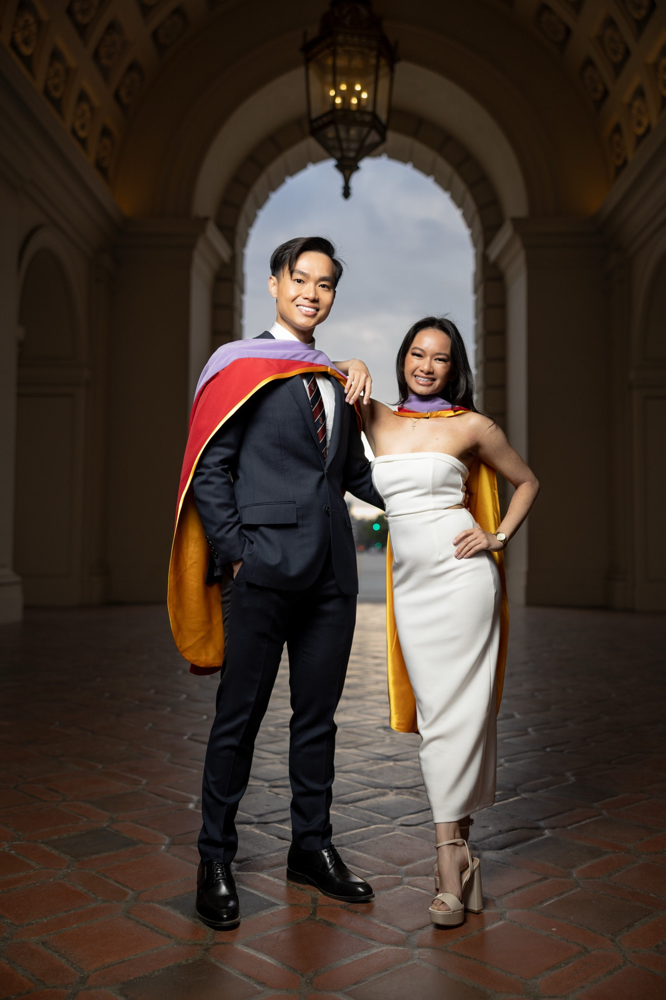

USC is one of the most photogenic campuses in the country. Between the Romanesque architecture, the iconic statues, and the wide tree-lined walkways, there is no shortage of stunning graduation photo locations.
I have photographed dozens of Trojan graduates across every corner of campus, and I have learned which spots photograph best at which times. This guide breaks down the 7 locations I recommend most, with tips on timing, lighting, and how to make the most of each one.
1. Tommy Trojan

This is the shot every USC graduate wants. The bronze Tommy Trojan statue sits at the center of Trousdale Parkway surrounded by the Trojan Shrine, and it is the single most recognizable symbol of the university. If you only have time for one location, this is the one.
The challenge with Tommy Trojan is the crowds. During graduation season, there can be a line of 30 to 45 minutes just to get a clean shot. I schedule Tommy Trojan either first thing in the session (before the afternoon rush) or later in the evening when the crowds thin out. Shooting on a weekday also helps significantly.
Best time to shoot: Before 3pm or after 6pm on weekdays. The statue faces west, so late afternoon light hits it beautifully from behind, giving you a warm backlit glow.
What works here: Classic standing poses next to the statue, hand on the shield, or sitting on the base. The Trojan Shrine columns behind the statue also make a great framing element for wider shots.
2. Doheny Memorial Library
Doheny Library is the architectural crown jewel of USC. The Romanesque facade, the arched entrance, the grand staircase, and the towering columns create a backdrop that looks like it belongs in a movie. It is one of the most versatile locations on campus because you can shoot from so many different angles.
The front steps are the classic shot, but I also like using the side pillars to frame portraits and shooting from below on the staircase for a more dramatic perspective. The building faces east, which means the front is in shade during the afternoon, making it perfect for soft, even lighting without harsh shadows.
Best time to shoot: 3pm to 5pm. The front of the building is shaded during this window, which eliminates squinting and gives you beautiful, even light across your face.
What works here: Walking up the stairs, leaning against the pillars, standing centered in the arched doorway. Group shots on the wide staircase work especially well since there is plenty of room to spread out.
3. Mudd Hall of Philosophy

Mudd Hall is one of USC's best kept secrets for graduation photos. The Romanesque architecture, arched doorways, and lush surrounding gardens create a dramatic, old-world feel that you will not find anywhere else on campus. It is quieter than Tommy Trojan or Doheny, which means shorter wait times and a more relaxed shooting experience.
The arched walkways along the exterior are perfect for framed portraits, and the courtyard garden provides a softer, greener backdrop if you want variety within a single location. I always make sure to hit both sides of the building since each offers a completely different look.
Best time to shoot: Anytime between 2pm and 5pm. The building's covered walkways provide shade regardless of sun position, so you have flexible timing here.
What works here: Standing in the arched doorways, walking through the garden, leaning against the stone columns. The warm brick and stone tones complement almost any outfit color.
4. Traveler Horse Statue

The Traveler statue near the Los Angeles Memorial Coliseum captures the spirit of USC athletics and tradition in a way that no other spot on campus can match. The dynamic bronze horse and rider make for a bold, energetic backdrop that stands apart from the typical library-and-columns graduation photos.
This location is slightly off the main campus walkway, which means it is less crowded than Tommy Trojan or the Steps of Troy. The open area around the statue also gives you room for wider compositions and group shots without other people wandering into the frame.
Best time to shoot: Late afternoon, around 4pm to 5:30pm. The statue sits in an open area that gets great golden hour light as the sun moves lower.
What works here: Standing next to the horse with your hand on the base, action poses (Fight On hand sign), and wider shots that capture the full statue with the Coliseum in the background.
5. Bovard Auditorium

Bovard Auditorium sits prominently on Trousdale Parkway with its red brick exterior and white columns. The long walkway leading up to the building creates a dramatic approach shot that works beautifully for both solo and group compositions. It is one of the most underrated photo spots on campus.
What I love about Bovard is the depth. The walkway gives you leading lines that draw the eye straight to you, and the symmetry of the building creates a balanced, clean composition. It also connects well to other nearby locations, so you can move between Bovard, Tommy Trojan, and Doheny without much walking.
Best time to shoot: 3pm to 5pm. The building faces south, so afternoon light hits the front evenly without casting harsh shadows from the columns.
What works here: Walking shots on the long pathway, standing between the columns, sitting on the front steps. The red brick also makes a great backdrop for solo portraits with off-camera lighting.
6. Steps of Troy

The wide, sweeping staircase at the heart of campus is a classic USC graduation photo spot. The symmetrical steps and surrounding architecture create a grand, cinematic composition. If you are looking for a shot that screams "I graduated from USC," this is it.
The steps give you natural elevation changes, which means I can shoot from above, below, or straight on for completely different looks. It is also one of the best spots on campus for large group photos since the width of the staircase can accommodate a dozen people without feeling cramped.
Best time to shoot: 3pm to 4:30pm. The steps face north, so they stay evenly lit throughout the afternoon without harsh directional shadows.
What works here: Standing at the top with your arms wide, walking down the steps, sitting on the edge for a more relaxed pose. Group photos lined up across the staircase look incredible from below.
7. Shumway Fountain

The Patsy and Forrest Shumway Fountain near Alumni Park is a stunning water feature surrounded by lush landscaping. The cascading water adds movement and energy to your photos in a way that static architectural backdrops simply cannot. It is a refreshing change of pace after shooting at buildings and statues.
The fountain also catches light beautifully in the late afternoon, creating sparkle and shimmer in the water behind you. I like to position graduates in front of the fountain with the water blurred in the background for a soft, dreamy effect using off-camera lighting to separate you from the scenery.
Best time to shoot: 4pm to 5:30pm. The backlit water creates beautiful bokeh and light flares during golden hour.
What works here: Standing in front of the fountain with water blurred behind you, candid walking shots along the surrounding path, and couples photos with the water as a romantic backdrop.
Tips for Your USC Graduation Shoot

A few things I have learned from shooting at USC over the years that will make your session go smoother:
- Book a weekday if you can. Weekend crowds during graduation season are significantly larger. A Tuesday or Wednesday session means shorter waits at popular spots and cleaner backgrounds.
- Plan for 1.5 to 2 hours. Covering multiple locations, outfit changes, and group shots takes time. Rushing through campus leads to missed opportunities.
- Wear comfortable walking shoes between locations and swap into your dress shoes when we start shooting. The campus covers a lot of ground.
- Bring a backup outfit. A gown-on and gown-off look gives you twice the variety in your gallery. Most of my USC clients do at least one outfit change.
- Avoid commencement week for professional photos. The campus is packed, access is restricted, and the overall experience is more stressful. Shoot a week or two before for the best results.
- Golden hour is your friend. The best light at USC happens between 4pm and 6pm. I schedule most sessions to hit the key locations during this window.
How I Shoot at USC
Every USC session starts with a plan. Before your shoot day, I will ask about your preferred locations, outfit changes, and any group shots you want to include. On the day of, I arrive with professional off-camera lighting equipment that gives your photos a polished, editorial quality that natural light alone cannot achieve.
I am based in Orange County but travel to USC regularly for graduation sessions. The travel is built into my USC pricing, so there are no surprise fees. Solo sessions are $350, duo sessions are $300 per person, and triple sessions are $250 per person. All packages include 24-hour raw photo delivery and edited selections in 7 to 10 days.
Want to see more of my work? Check out the full portfolio or read about how to prepare for your graduation photoshoot.
Ready to lock in your date? Book your USC session here.